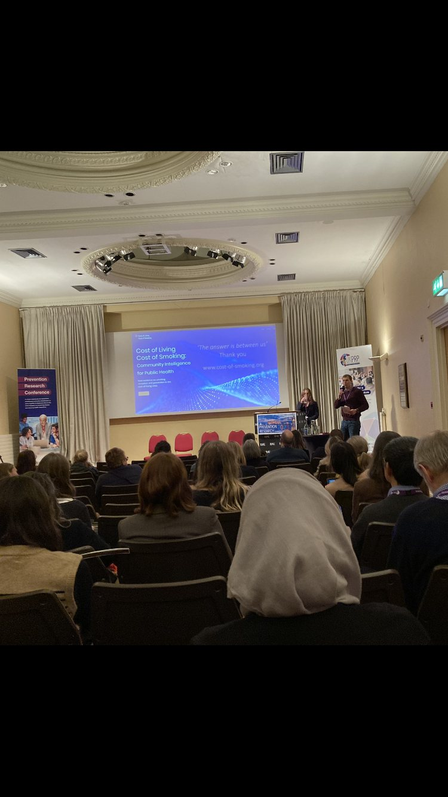

News · November 2023
Sharing our results at national conference Prevention Research 2023

Lucia D’Ambruoso gave an oral presentation at the first conference organised by the Community of Practice of the UK Prevention Research Partnership, Prevention Research 2023, 14–15 November at the Royal Society of Edinburgh.
The presentation was entitled: Cost-of-living/cost of smoking: cooperative learning on NCD health inequalities in deprived communities within the cost-of-living crisis. We shared results from the demonstration study to embed community empowerment within a learning health systems process.
Methodologically, we discussed that:
- While participation of communities in public services is long recognised as enhancing legitimacy and acceptability of decisions, and furthering trust in public institutions, in practice participation takes many forms, and in some cases reproduces the very power asymmetries it seeks to confront. Operational guidance on participation is limited, and the central category of power is drastically under-theorised.
- Learning is crucial for systems performance, however operational understanding is lacking. Emerging evidence supports: the development of capabilities to engage iteratively with problems; drawing on different forms of knowledge; creating common understandings and defining appropriate solutions; and creating spaces and providing resources for communities, staff and managers to find solutions for challenges.
We shared how the study progressed cooperative learning on smoking within the cost-of-living crisis, cognisant of the social, political and commercial determinants of health inequalities as an essential perspective, and one that informs and benefits people in communities and people working with them.
All news